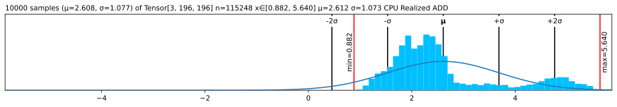
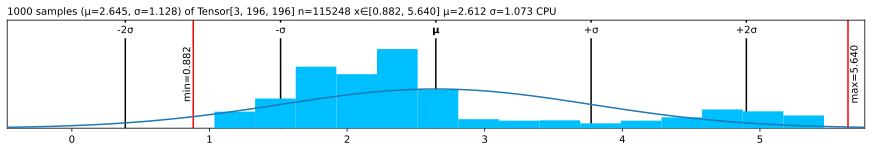
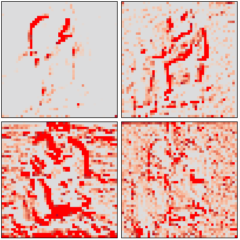
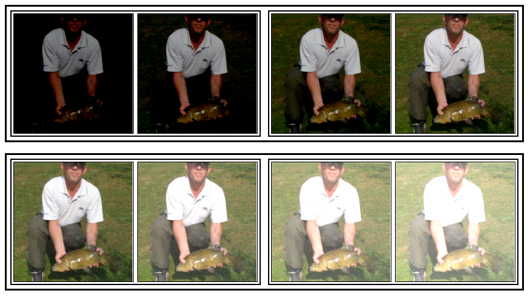
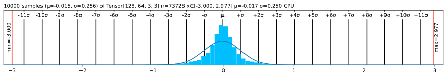
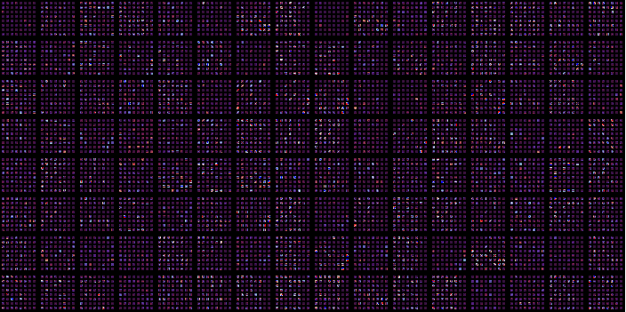
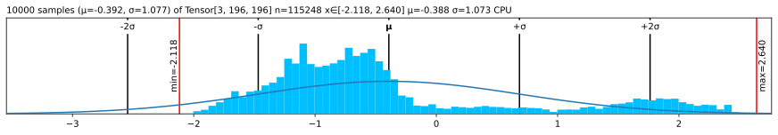
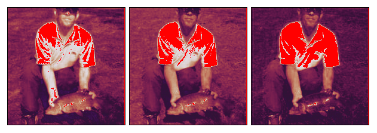
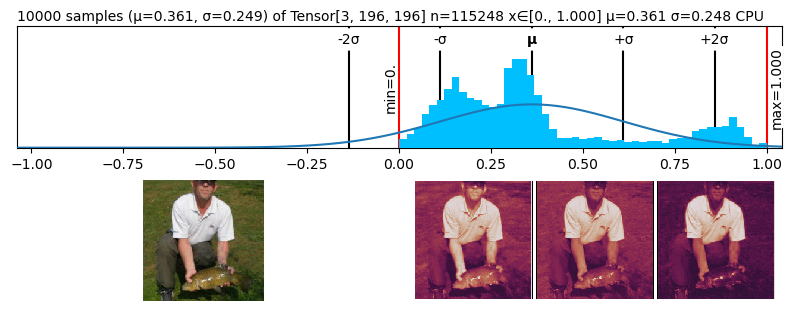

numbers<Tensor <LB (3, 196, 196) dtypes.float op=buffer<115248, dtypes.float, 140110070756784> st=ShapeTracker(views=(View(shape=(3, 196, 196), strides=(38416, 196, 1), offset=0, mask=None, contiguous=True),))> on CPU with grad None>JAXNumPypip install lovely-gradHow often do you find yourself debugging TinyGrad code? You dump a tensor to the cell output, and see this:
numbers<Tensor <LB (3, 196, 196) dtypes.float op=buffer<115248, dtypes.float, 140110070756784> st=ShapeTracker(views=(View(shape=(3, 196, 196), strides=(38416, 196, 1), offset=0, mask=None, contiguous=True),))> on CPU with grad None>Or this
numbers.numpy()array([[[-0.3541, -0.3369, ..., -0.4739, 2.2489],
[-0.4054, -0.4226, ..., -0.8507, 2.1633],
...,
[-0.8507, -0.7822, ..., -1.5014, 2.1804],
[-0.8335, -0.8164, ..., -1.5528, 2.1119]],
[[-0.1975, -0.1975, ..., -0.3725, 2.4111],
[-0.25 , -0.2325, ..., -0.6702, 2.3585],
...,
[-0.3901, -0.2325, ..., -1.2304, 2.4111],
[-0.4076, -0.285 , ..., -1.2829, 2.341 ]],
[[-0.6715, -0.9853, ..., -0.689 , 2.396 ],
[-0.7238, -1.0724, ..., -1.0201, 2.3263],
...,
[-1.1944, -1.4559, ..., -1.4733, 2.4308],
[-1.2293, -1.5256, ..., -1.5256, 2.3611]]], dtype=float32)Was it really useful for you, as a human, to see all these numbers?
What is the shape? The size?
What are the statistics?
Are any of the values nan or inf?
from lovely_grad import monkey_patch; monkey_patch()numbersTensor[3, 196, 196] n=115248 x∈[-2.118, 2.640] μ=-0.388 σ=1.073 CPUBetter, huh?
numbers[1,:6,1] # Still shows values if there are not too many.Tensor[6] x∈[-0.443, -0.197] μ=-0.311 σ=0.091 CPU [-0.197, -0.232, -0.285, -0.373, -0.443, -0.338]spicy = numbers[0,:12,0].numpy() # Please add native support for this.
spicy[0] *= 10000.0
spicy[1] /= 10000.0
spicy[3] = np.Inf
spicy[4] = np.NINF
spicy[5] = np.NaN
spicy = Tensor(spicy).reshape(2,6)
spicy # Spicy stuffTensor[2, 6] n=12 x∈[-3.541e+03, -4.054e-05] μ=-393.827 σ=1.113e+03 +Inf! -Inf! NaN! CPU
Tensor.zeros(10, 10) # A zero tensor - make it obviousTensor[10, 10] n=100 all_zeros CPU Realized EXPAND
spicy += 1 # Make ot lazy again
spicy.p # The plain old way<Tensor <LB (2, 6) dtypes.float op=BinaryOps.ADD st=ShapeTracker(views=(View(shape=(2, 6), strides=(6, 1), offset=0, mask=None, contiguous=True),))> on CPU with grad None>spicy.v # Verbose<Tensor <LB (2, 6) dtypes.float op=BinaryOps.ADD st=ShapeTracker(views=(View(shape=(2, 6), strides=(6, 1), offset=0, mask=None, contiguous=True),))> on CPU with grad None> Tensor[2, 6] n=12 x∈[-3.540e+03, 1.000] μ=-392.827 σ=1.113e+03 +Inf! -Inf! NaN! CPU Realized ADD
from lovely_grad import set_config
from lovely_grad import config # This is a context manager by the way.set_config(auto_realize=False)
s = spicy+1
s # No realizationTensor[2, 6] n=12 CPU Lazy ADDs # still lazyTensor[2, 6] n=12 CPU Lazy ADDset_config(auto_realize=True)
s # Will realizeTensor[2, 6] n=12 x∈[-3.539e+03, 2.000] μ=-391.827 σ=1.113e+03 +Inf! -Inf! NaN! CPU Realized ADD
s # Already realizedTensor[2, 6] n=12 x∈[-3.539e+03, 2.000] μ=-391.827 σ=1.113e+03 +Inf! -Inf! NaN! CPU
.deepernumbers.deeperTensor[3, 196, 196] n=115248 x∈[-2.118, 2.640] μ=-0.388 σ=1.073 CPU
Tensor[196, 196] n=38416 x∈[-2.118, 2.249] μ=-0.324 σ=1.036 CPU
Tensor[196, 196] n=38416 x∈[-1.966, 2.429] μ=-0.274 σ=0.973 CPU
Tensor[196, 196] n=38416 x∈[-1.804, 2.640] μ=-0.567 σ=1.178 CPU# You can go deeper if you need to
numbers[:,:3,:5].deeper(2)Tensor[3, 3, 5] n=45 x∈[-1.316, -0.197] μ=-0.593 σ=0.306 CPU
Tensor[3, 5] n=15 x∈[-0.765, -0.337] μ=-0.492 σ=0.124 CPU
Tensor[5] x∈[-0.440, -0.337] μ=-0.385 σ=0.041 CPU [-0.354, -0.337, -0.405, -0.440, -0.388]
Tensor[5] x∈[-0.662, -0.405] μ=-0.512 σ=0.108 CPU [-0.405, -0.423, -0.491, -0.577, -0.662]
Tensor[5] x∈[-0.765, -0.474] μ=-0.580 σ=0.125 CPU [-0.474, -0.474, -0.542, -0.645, -0.765]
Tensor[3, 5] n=15 x∈[-0.513, -0.197] μ=-0.321 σ=0.099 CPU
Tensor[5] x∈[-0.303, -0.197] μ=-0.243 σ=0.055 CPU [-0.197, -0.197, -0.303, -0.303, -0.215]
Tensor[5] x∈[-0.408, -0.232] μ=-0.327 σ=0.084 CPU [-0.250, -0.232, -0.338, -0.408, -0.408]
Tensor[5] x∈[-0.513, -0.285] μ=-0.394 σ=0.102 CPU [-0.303, -0.285, -0.390, -0.478, -0.513]
Tensor[3, 5] n=15 x∈[-1.316, -0.672] μ=-0.964 σ=0.176 CPU
Tensor[5] x∈[-0.985, -0.672] μ=-0.846 σ=0.123 CPU [-0.672, -0.985, -0.881, -0.776, -0.916]
Tensor[5] x∈[-1.212, -0.724] μ=-0.989 σ=0.179 CPU [-0.724, -1.072, -0.968, -0.968, -1.212]
Tensor[5] x∈[-1.316, -0.828] μ=-1.058 σ=0.179 CPU [-0.828, -1.125, -1.020, -1.003, -1.316].rgb colorThe important queston - is it our man?
numbers.rgb
Maaaaybe? Looks like someone normalized him.
in_stats = ( [0.485, 0.456, 0.406], # mean
[0.229, 0.224, 0.225] ) # std
# numbers.rgb(in_stats, cl=True) # For channel-last input format
numbers.rgb(in_stats)
It’s indeed our hero, the Tenchman!
.plt the statistics(numbers+3).plt
(numbers+3).plt(center="mean", max_s=1000)
(numbers+3).plt(center="range")
.chans# .chans will map values betwen [-1,1] to colors.
# Make our values fit into that range to avoid clipping.
mean = Tensor(in_stats[0])[:,None,None]
std = Tensor(in_stats[1])[:,None,None]
numbers_01 = (numbers*std + mean)
numbers_01Tensor[3, 196, 196] n=115248 x∈[0., 1.000] μ=0.361 σ=0.248 CPU Realized ADD
numbers_01.chans
Let’s try with a Convolutional Neural Network
import torch
import tinygrad.nn as nnclass VGG_top:
"""Top 6 layers (until 3rd conv) of VGG"""
def __init__(self, weights=None):
self.layers = [
nn.Conv2d(3, 64, kernel_size=3, stride=1, padding=1, bias=True),
Tensor.relu,
Tensor.max_pool2d,
nn.Conv2d(64, 128, kernel_size=3, stride=1, padding=1, bias=True),
Tensor.relu,
Tensor.max_pool2d,
]
if weights:
self.layers[0].weight = Tensor(weights["0.weight"].numpy())
self.layers[0].bias = Tensor(weights["0.bias"].numpy())
self.layers[3].weight = Tensor(weights["3.weight"].numpy())
self.layers[3].bias = Tensor(weights["3.bias"].numpy())
def __call__(self, x: Tensor):
return x.sequential(self.layers)tg_vgg = VGG_top(torch.load("features.pt"))acts = tg_vgg(numbers[None])/2
actsTensor[1, 128, 49, 49] n=307328 x∈[0., 12.508] μ=0.367 σ=0.634 CPU Realized MUL
acts[0,:4].chans(cmap="coolwarm", scale=4)
# Make 8 images with progressively higher brightness and stack them 2x2x2.
eight_images = (Tensor.stack([numbers]*8) + Tensor(np.linspace(-2, 2, 8).astype(np.float32)).reshape(8,1,1,1))
eight_images = (eight_images
.mul(Tensor(in_stats[1]).reshape(1,3,1,1))
.add(Tensor(in_stats[0]).reshape(1,3,1,1))
.clip(0,1)
.reshape(2,2,2,3,196,196)
)
eight_imagesTensor[2, 2, 2, 3, 196, 196] n=921984 x∈[0., 1.000] μ=0.382 σ=0.319 CPU Realized NEG
eight_images.rgb
# Weights of the second conv layer of VGG11
tg_vgg.layers[3].weightTensor[128, 64, 3, 3] n=73728 x∈[-0.783, 0.776] μ=-0.004 σ=0.065 CPUI want +/- 2σ to fall in the range [-1..1]
weights = tg_vgg.layers[3].weight
weights = weights / (2*2*weights.std()) # *2 because we want 2σ on both sides, so 4σ
# weights += weights.std() * 2
weights.plt
# Weights of the second conv layer (64ch -> 128ch) of VGG11,
# grouped per output channel.
weights.chans(frame_px=1, gutter_px=0)
It’s a bit hard to see. Scale up 10x, but onyl show the first 4 filters.
weights[:4].chans(frame_px=1, gutter_px=0, scale=10)
import lovely_grad as lglg.set_config(precision=1, sci_mode=True, color=False)
Tensor([1, 2, float("NaN")])Tensor[3] μ=1.5e+00 σ=5.0e-01 NaN! CPU [1.0e+00, 2.0e+00, nan]lg.set_config(precision=None, sci_mode=None, color=None) # None -> Reset to defaultsprint(Tensor([1., 2]))
# Or with config context manager.
with lg.config(sci_mode=True, precision=5):
print(Tensor([1., 2]))
print(Tensor([1., 2]))Tensor[2] μ=1.500 σ=0.707 CPU [1.000, 2.000]
Tensor[2] μ=1.50000e+00 σ=7.07107e-01 CPU [1.00000e+00, 2.00000e+00]
Tensor[2] μ=1.500 σ=0.707 CPU [1.000, 2.000].monkey_patchlg.lovely(spicy)Tensor[2, 6] n=12 x∈[-3.540e+03, 1.000] μ=-392.827 σ=1.113e+03 +Inf! -Inf! NaN! CPU
lg.lovely(spicy, verbose=True)<Tensor <LB (2, 6) dtypes.float op=buffer<12, dtypes.float, 140110067875792> st=ShapeTracker(views=(View(shape=(2, 6), strides=(6, 1), offset=0, mask=None, contiguous=True),))> on CPU with grad None> Tensor[2, 6] n=12 x∈[-3.540e+03, 1.000] μ=-392.827 σ=1.113e+03 +Inf! -Inf! NaN! CPU
lg.lovely(numbers, depth=1)Tensor[3, 196, 196] n=115248 x∈[-2.118, 2.640] μ=-0.388 σ=1.073 CPU
Tensor[196, 196] n=38416 x∈[-2.118, 2.249] μ=-0.324 σ=1.036 CPU
Tensor[196, 196] n=38416 x∈[-1.966, 2.429] μ=-0.274 σ=0.973 CPU
Tensor[196, 196] n=38416 x∈[-1.804, 2.640] μ=-0.567 σ=1.178 CPUlg.rgb(numbers, in_stats)
lg.plot(numbers, center="mean")
lg.chans(numbers_01)numbers.rgb(in_stats).fig # matplotlib figure(numbers*0.3+0.5).chans.fig # matplotlib figure
numbers.plt.fig.savefig('pretty.svg') # Save it!file pretty.svg; rm pretty.svgpretty.svg: SVG Scalable Vector Graphics imagefig = plt.figure(figsize=(8,3))
fig.set_constrained_layout(True)
gs = fig.add_gridspec(2,2)
ax1 = fig.add_subplot(gs[0, :])
ax2 = fig.add_subplot(gs[1, 0])
ax3 = fig.add_subplot(gs[1,1:])
ax2.set_axis_off()
ax3.set_axis_off()
numbers_01.plt(ax=ax1)
numbers_01.rgb(ax=ax2)
numbers_01.chans(ax=ax3);